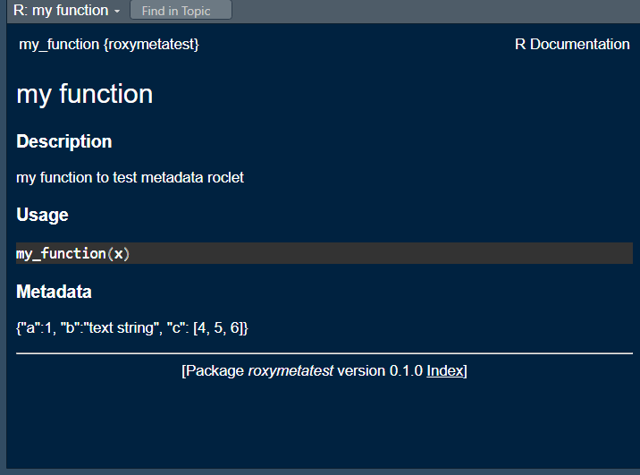

df <- data.frame(a = 1:5, b = letters[1:5])
## retrieve attributes
attributes(df)$names
[1] "a" "b"
$class
[1] "data.frame"
$row.names
[1] 1 2 3 4 5Harvey
May 28, 2022
This post describes three ways to tag functions with metadata.
Using attributes is a simple way to add metadata to any object in R. Data frames and other objects already use attributes to hold metadata which are accessible via the attributes function.
$names
[1] "a" "b"
$class
[1] "data.frame"
$row.names
[1] 1 2 3 4 5Metadata can be added by simply using the attributes function and retrieved using attr.
$srcref
function(x, y) {
sum(x, y)
}
$f
[1] "function: sum"
$param_count
[1] 2Metadata can be associated with any R object using comment. The comment is, in fact, simply an attribute with the limitation that it must be a character vector. Multiple items of metadata can be attached using the comment function.
Once set, comment can be used to retrieve one of more items of metadata.
For a more complex data structure a json object can be attached. Note that in the example below, param_count is a numeric as opposed to a character type imposed when using comment to hold a vector.
Metadata can be included in custom roxygen2 tags. Once added it can be retrieved programatically.
In order to demonstrate this method we need to build two packages - one for the custom tag and the other to demonstate its use in a function.
This package consists of a number of functions to define a new roclet, metadata which can be used to store metadata for a function. The R code is shown below.
#' roclet to parse @metadata tag
#'
#' @import roxygen2
#' @export
metadata <- function() {
roxygen2::roclet("metadata")
}
#' @rdname metadata
#' @importFrom roxygen2 tag_markdown
#' @export
roxy_tag_parse.roxy_tag_metadata <- function(x) {
roxygen2::tag_markdown(x)
}
#' @rdname metadata
#' @importFrom roxygen2 rd_section
#' @export
roxy_tag_rd.roxy_tag_metadata <- function(x, base_path, env) {
roxygen2::rd_section('metadata', x$val)
}
#' @rdname metadata
#' @export
format.rd_section_metadata <- function(x, ...) {
paste0(
"\\section{Metadata}{\n",
x$value,
"}\n"
)
}
#' @rdname metadata
#' @export
roclet_process.roclet_metadata <- function(x, blocks, env, base_path) {
x
}
#' @rdname metadata
#' @export
roclet_output.roclet_metadata <- function(x, results, base_path, ...) {
x
}An explanation of extending roxygen2 can be found with the roxygen2 documentation.
After running roxygen2::roxygenize() to document and build the NAMESPACE file, this package can be built and installed.
To test the roclet we need to build a second package consisting of a single function, my_function.
This function contains the new roclet @metadata which holds a json-encoded string of parameters.
In addition to the function we need to add this line to the DESCRIPTION file:
Once roxygen2::roxygenize() is run, the function documentation incudes the new tag:

Now that the metadata has been attached to a function it can be retrieved using the code below:
#' extract parameters from roxygen tags
#'
#' extract parameters from roxygen tags
#'
#' @param n Namespace
#' @param f Function
#'
#' @importFrom tools Rd_db
#' @importFrom jsonlite fromJSON
#'
#' @export
#'
get_params <- function(n, f) {
db <- tools::Rd_db(n)
fn_rd <- db[[paste0(f, ".Rd")]]
## get list of attributes
fn_attributes <- lapply(fn_rd, attributes)
## get sections
fn_sections <- which(
sapply(fn_attributes, function(x) {
x$Rd_tag == "\\section"
})
)
## get param section
fn_params <- which(
sapply(fn_rd[fn_sections], function(x) {
x[[1]] == "Metadata"
})
)
if (length(fn_params) > 0) {
input_tags <- fn_rd[[fn_sections[fn_params]]]
param_tag <- input_tags[[2]][[2]]
return(jsonlite::fromJSON(as.character(param_tag), simplifyVector = FALSE))
} else {
return(NULL)
}
}This function simply retrieves the Rd file and parses it, retrieving the json-encoded metadata and returning a list.
$a
[1] 1
$b
[1] "text string"
$c
$c[[1]]
[1] 4
$c[[2]]
[1] 5
$c[[3]]
[1] 6This is a very basic example, simply demonstrating what can be done.
One use-case for this approach is for self-building shiny functions. Such a function could embed shiny widget details which are used to build interactive inputs to the function. The shiny widgets could therefore be built for the function prior to running the function itself.
code for this example is available in
https://github.com/harveyl888/roxymeta
https://github.com/harveyl888/roxymetatest
https://gist.github.com/harveyl888/1f043414a4102ed5f04e8ed22b73c939